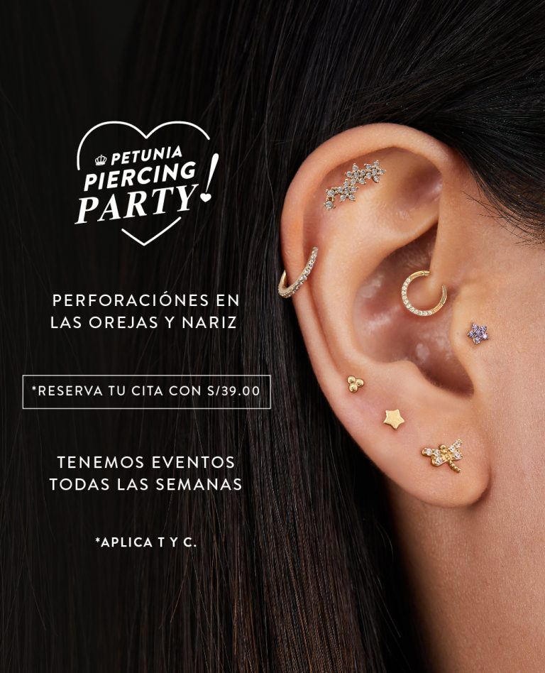
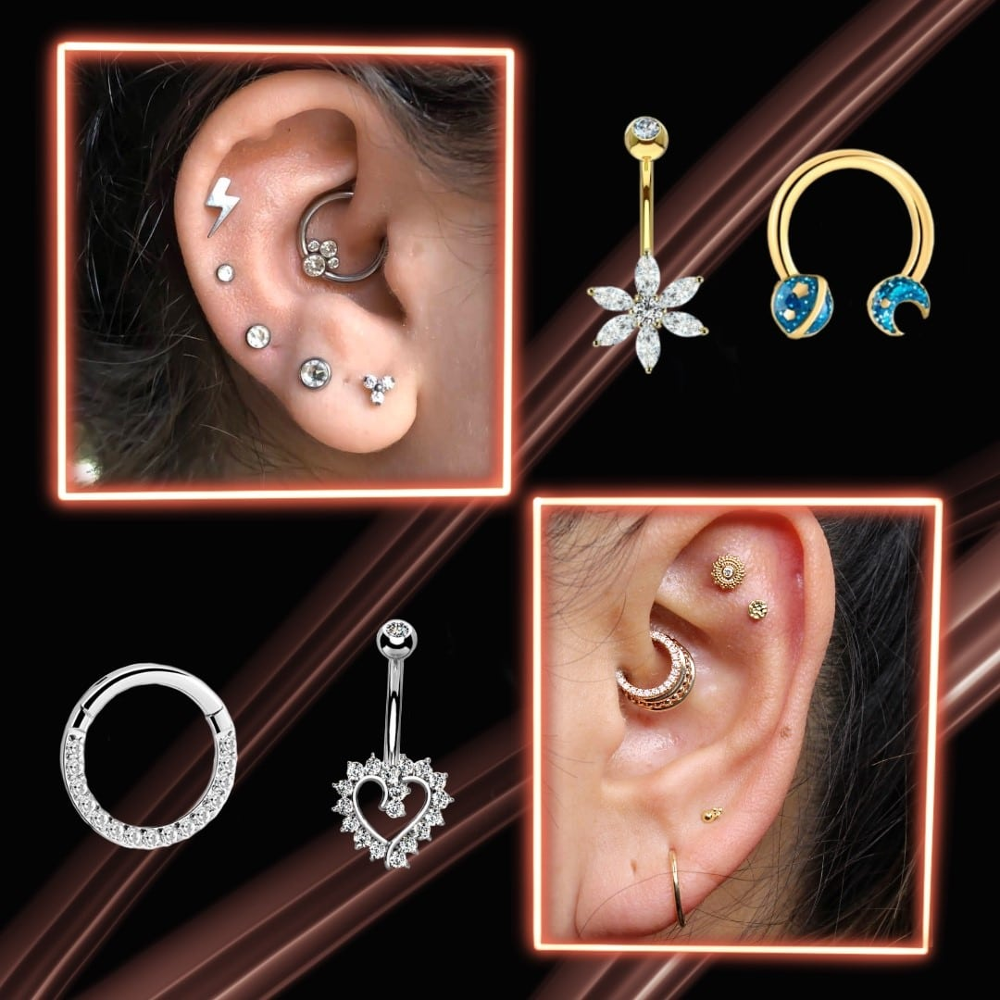

Tendencias en Piercings para 2024
Este año, los piercings están tomando un giro audaz con diseños innovadores y materiales únicos. ¡Descubre lo que está de moda!
Leer másDescubre las últimas tendencias en piercings, estilos innovadores y consejos para llevarlos con estilo.
Este año, los piercings están tomando un giro audaz con diseños innovadores y materiales únicos. ¡Descubre lo que está de moda!
Leer másDesde el tipo de piercing hasta el material, aquí te damos todos los consejos para elegir el piercing que mejor se adapte a tu estilo y personalidad.
Leer másMantener tus piercings en perfectas condiciones es crucial. Aquí te mostramos cómo cuidarlos adecuadamente para evitar infecciones y asegurar una curación rápida.
Leer másExplora cómo combinar tatuajes y piercings para crear un estilo único e impresionante.
Leer másConsejos sobre cómo llevar tus piercings de manera profesional en el lugar de trabajo.
Leer másUsuario1: ¡Me encanta la tendencia de piercings en la nariz! Muy útil el blog.
Usuario2: Los consejos de cuidado son geniales. Definitivamente seguiré estos pasos.